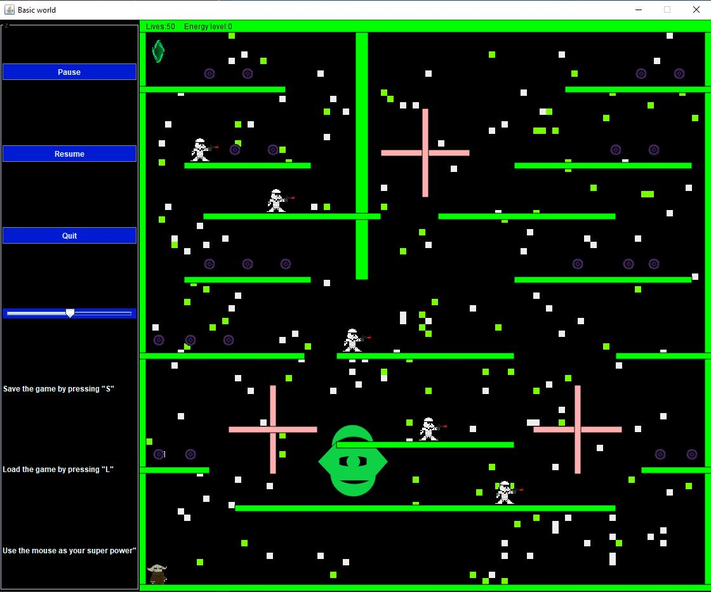
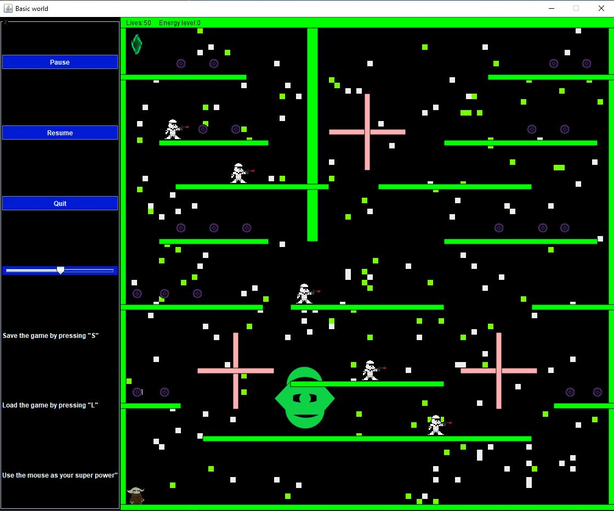
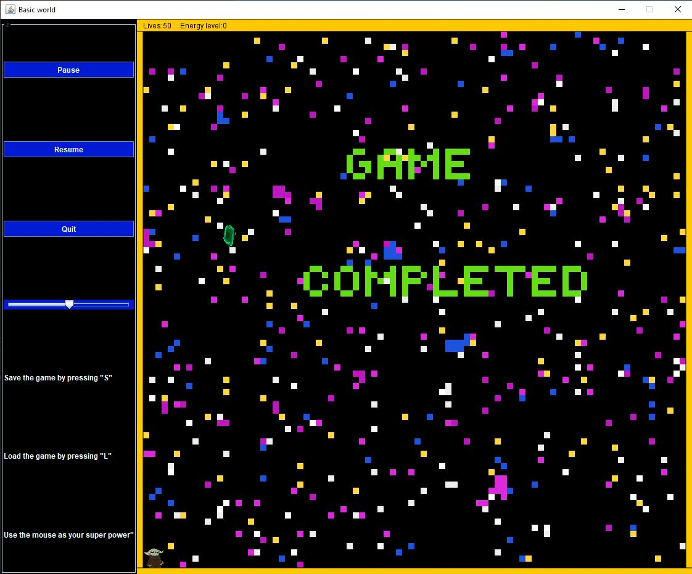
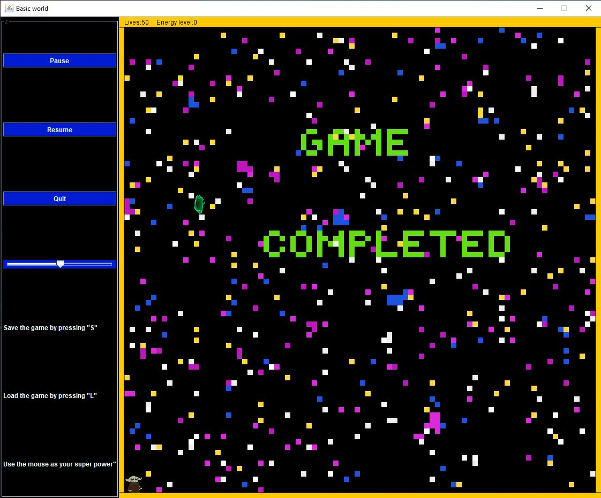

Valentin Madzharov
I am a 19 years old Computer Science student at City University of London in my first year and in this
page I will be showing you the different projects I have been working on and I have created. Before City I
have been doing some web development and also I have been making some little programs using Visual Basic.
Aditionally I am very interested in working in front-end Web Development and I am very passionate about
learning new skils and improving my knowledge about the industry.

Project name: The Random Party Theme
This is my first project that i have developed in my time in University and this project was made during the first two weeks of bootcamp. This is a Processing project is very simple and shows my understanding in loops, randomness, and sound and here is what it does:
The project is a background party program which gives a mood and theme to a party by playing a song in the background while shapes are changing their size and color randomly and additionaly there is a sphere spining which adds to the party theme. I achieved this by using for loops which allow all the rectangles and circles to be positioned correctly and additionally it allows them to change their size randomnly every second.
Check out the code on Github: https://github.com/Madzharovv/adbt117

Project name: Galaxy Portals I
Galaxy Portals I is an Arcade game that was developed using Java. The main aim of the game is to make it through the galxy alive and with as many energy balls collected.
When playing through the game you encounter different troubles like figuring out what the best route is to the next portal or figuring out how to avoid the enemies while making your way across the levels. The game has saving and loading features and enjoyableand fitting background music that adds to the amazing experience that playing the game is.
Check out the code on Github: https://github.com/Madzharovv/adbt117
 



 
